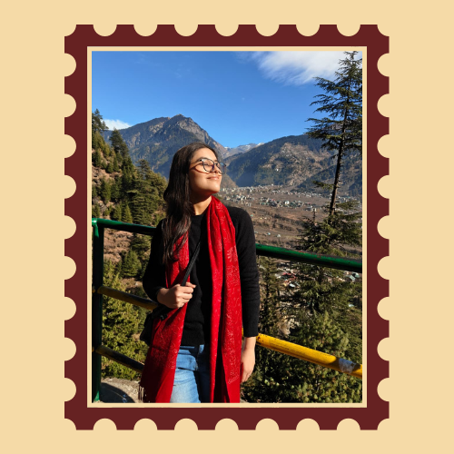

To: Ms.Pari Kadyan
To: The Love of My Life
Honestly I couldnt have asked for a better first relationship in my life, it is genuinely so beautiful, so fun, so mature but weird at the same time, like a fun kind of weird. Over these past few months I have finally understood(i feel) what love is, it is not about perfection, not about fighting with each other, but accepting each other as they are, being their for each other, waiting for each other, and however much you feel you didnt do that, i didnt feel that at all, except the past month or so but thats also fine because you were going through shit and i am glad that you atleast told me so i didnt overthink. i honestly dont know what all is written in these letters so i am just going to write my heart out, now there would be things i would have said earlier too so yea bear with me their. i'd also like to thank you to like bear with me, ik mai kabhi kabhi zyada hi nakhre kardeta and i overthink a lot and i fuck up a lot and i sometimes annoy u too but u are still their handling me when i panic being their, its honestly the best feeling in the world when u know someone is their for you, and ik i havent been able to do it that much but i promise i would try my best to get to know you to love you how you want to be loved to care for you i would. i really hope this relationship lasts and please do tell me if i ever do something wrong, if not at that moment after some time maybe but please do, i remember i had used the term mature bhondus because we are we know the importance of communication in a relationship we had this talk i believe pre-relationship one night oh yea that night you actually quite impressed me like i was flabbergasted, i had told so many people i open up at night but u took the effort to get to know me and i hope to do the same, I really really love you pari and everything would be alright whatever you are going through, and if you ever want to talk about it you could(I have worked upon myself to not joke at moments like these and not just give solutions, so i would listen i promise), i love youuuuuuuuuuuuuuuuu